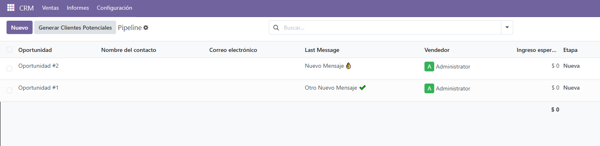

This module adds a computed field to CRM Leads that shows the last incoming message. It makes it easier for your sales team to see the latest customer interaction without opening the full record.
Tested and optimized for Odoo 18.2. No external dependencies.